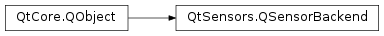

QSensorBackend¶
Synopsis¶
Functions¶
- def
addDataRate(min, max) - def
addOutputRange(min, max, accuracy) - def
newReadingAvailable() - def
reading() - def
sensor() - def
sensorBusy() - def
sensorError(error) - def
sensorStopped() - def
setDataRates(otherSensor) - def
setDescription(description)
Virtual functions¶
- def
isFeatureSupported(feature) - def
start() - def
stop()
Detailed Description¶
The
PySide2.QtSensors.QSensorBackendclass is a sensor implementation.Sensors on a device will be represented by sub-classes of
PySide2.QtSensors.QSensorBackend.
-
class
PySide2.QtSensors.QSensorBackend(sensor[, parent=Q_NULLPTR])¶ Parameters: - sensor –
PySide2.QtSensors.QSensor - parent –
PySide2.QtCore.QObject
- sensor –
-
PySide2.QtSensors.QSensorBackend.addDataRate(min, max)¶ Parameters: - min –
PySide2.QtCore.qreal - max –
PySide2.QtCore.qreal
Add a data rate (consisting of
minandmaxvalues) for the sensor.Note that this function should be called from the constructor so that the information is available immediately.
See also
- min –
-
PySide2.QtSensors.QSensorBackend.addOutputRange(min, max, accuracy)¶ Parameters: - min –
PySide2.QtCore.qreal - max –
PySide2.QtCore.qreal - accuracy –
PySide2.QtCore.qreal
Add an output range (consisting of
min,maxvalues andaccuracy) for the sensor.Note that this function should be called from the constructor so that the information is available immediately.
See also
- min –
-
PySide2.QtSensors.QSensorBackend.isFeatureSupported(feature)¶ Parameters: feature – PySide2.QtSensors.QSensor.FeatureReturn type: PySide2.QtCore.boolChecks whether a feature is supported by this sensor backend.
This is the backend side of
QSensor.isFeatureSupported(). Reimplement this function if the backend supports one of the additional sensor features ofQSensor.Feature.Returns whether the feature
featureis supported by this backend. The default implementation returns false.
-
PySide2.QtSensors.QSensorBackend.newReadingAvailable()¶ Notify the
PySide2.QtSensors.QSensorclass that a new reading is available.
-
PySide2.QtSensors.QSensorBackend.reading()¶ Return type: PySide2.QtSensors.QSensorReadingIf the backend has lost its reference to the reading it can call this method to get the address.
Note that you will need to down-cast to the appropriate type.
See also
setReading()
-
PySide2.QtSensors.QSensorBackend.sensor()¶ Return type: PySide2.QtSensors.QSensorReturns the sensor front end associated with this backend.
-
PySide2.QtSensors.QSensorBackend.sensorBusy()¶ Inform the front end that the sensor is busy. This implicitly calls
PySide2.QtSensors.QSensorBackend.sensorStopped()and is typically called fromPySide2.QtSensors.QSensorBackend.start().Note that the front end must call
QSensor.isBusy()to see if the sensor is busy. If the sensor has stopped due to an error thePySide2.QtSensors.QSensorBackend.sensorError()function should be called to notify the class of the error condition.
-
PySide2.QtSensors.QSensorBackend.sensorError(error)¶ Parameters: error – PySide2.QtCore.intInform the front end that a sensor error occurred. Note that this only reports an
errorcode. It does not stop the sensor.
-
PySide2.QtSensors.QSensorBackend.sensorStopped()¶ Inform the front end that the sensor has stopped. This can be due to
PySide2.QtSensors.QSensorBackend.start()failing or for some unexpected reason (eg. hardware failure).Note that the front end must call
QSensor.isActive()to see if the sensor has stopped. If the sensor has stopped due to an error thePySide2.QtSensors.QSensorBackend.sensorError()function should be called to notify the class of the error condition.
-
PySide2.QtSensors.QSensorBackend.setDataRates(otherSensor)¶ Parameters: otherSensor – PySide2.QtSensors.QSensorSet the data rates for the sensor based on
otherSensor.This is designed for sensors that are based on other sensors.
setDataRates(otherSensor);
Note that this function must be called from the constructor.
-
PySide2.QtSensors.QSensorBackend.setDescription(description)¶ Parameters: description – unicode Set the
descriptionfor the sensor.Note that this function should be called from the constructor so that the information is available immediately.
-
PySide2.QtSensors.QSensorBackend.start()¶ Start reporting values.
-
PySide2.QtSensors.QSensorBackend.stop()¶ Stop reporting values.
© 2018 The Qt Company Ltd. Documentation contributions included herein are the copyrights of their respective owners. The documentation provided herein is licensed under the terms of the GNU Free Documentation License version 1.3 as published by the Free Software Foundation. Qt and respective logos are trademarks of The Qt Company Ltd. in Finland and/or other countries worldwide. All other trademarks are property of their respective owners.